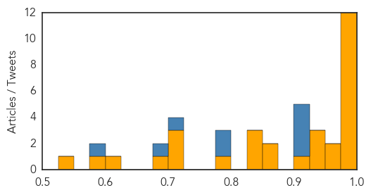

Mumps
30-Day Web Trend
13 alerts, 0 warnings

30-Day Twitter Trend
0 alerts, 0 warnings

Article Locations

Article Confidences

Top Articles:
Top Tweets:
- 0.524
- RT: Mumps can cause serious complications like brain swelling & deafness. Protect your child with mumps vaccine. http://t.co/LddU…
Ebola
30-Day Web Trend
1 alerts, 0 warnings

30-Day Twitter Trend
0 alerts, 0 warnings

Article Locations

Article Confidences
Top Articles:
- 1.000
- Ebola Outbreak: Sierra Leone Finally Ebola-Free : News : Headlines & Global News
- 1.000
- WHO reports 3 new Ebola cases—all in Guinea
- 1.000
- Explaining Emerging Infectious Diseases
- 0.999
- South Jersey malaria case triggers Ebola precautions
- 0.999
- Ebola virus outbreak: What does the Bible Say?
- 0.999
- UN: Fight against Ebola to cost $600 million
- 0.997
- Comment: The possible effect of 'leaky vaccines'
- 0.996
- Ebola's lessons: How WHO mishandled the crisis
- 0.994
- Ebola Situation Report
- 0.987
- Ebola in Sierra Leone: after 4,000 deaths, outbreak all but over
- 0.984
- Sierra Leone Awaits Countdown to Ebola-Free Existance
- 0.980
- Prepared for next global epidemic? The public doesn’t think so
- 0.972
- U.S. Based Center for Disease Control Lauds National Port Authority On Ebola Fight
- 0.959
- NYC names hotel as source of deadly Legionnaires' outbreak
- 0.939
- Health Ministry 2015 Mid-Year Review Towards Building a Resilient Health System Countrywide
- 0.930
- Guinea gives masterclass in how to bounce back from Ebola. Starting a business takes just 72 hours; this year expect 4,000 new ones
- 0.927
- Tackle Nepal’s typhoid problem now
- 0.922
- Politico SL News Malnutrition: Another health problem in Sierra Leone
- 0.869
- Anne Curtis donates Twitter account to Ebola survivor
- 0.853
- Protecting The Most Vulnerable in Sierra Leone's Latest Ebola Outbreak
- 0.848
- Politico SL News NERC warns against underreporting of deaths
- 0.836
- Doctors Rule Out Ebola For New York Patient
- 0.827
- UN and Africa: focus on Ebola, Libya and Somali economy
- 0.784
- Anne Curtis 'donates' her Twitter account to Ebola survivor
- 0.716
- Politico SL News Sierra Leone’s emergency rule gets political
- 0.701
- West and Central Africa Region Weekly Humanitarian Snapshot 11-17 August 2015 - Nigeria
- 0.701
- Ministry of Health and Sanitation – Sierra Leone
- 0.684
- Researchers' Work from Novartis Animal Health Focuses on Vaccines (Delivering vaccines to the people who need them most)
- 0.623
- Politico SL News New plan for Sierra Leone’s health sector
- 0.585
- FG to harmonise strategies for universal health coverage
- 0.528
- Leader in Hotel, Airlines, Tourism and Travel Trade News
Top Tweets:
- 0.982
- Ebola in Sierra Leone: after 4000 deaths, outbreak all but over - The Guardian http://t.co/vPq7JEdEXi ebola EVD
- 0.982
- Ebola in Sierra Leone: after 4000 deaths, outbreak all but over - The Guardian http://t.co/qE4bHZGIBj ebola EVD
- 0.982
- Ebola in Sierra Leone: after 4000 deaths, outbreak all but over - The Guardian http://t.co/DmViLV2v0q ebola EVD
- 0.962
- Ebola's lessons: How WHO mishandled the crisis - Devex http://t.co/I0IhwXZ3Jq ebola EVD
- 0.938
- Bringing Resiliency and Normalcy to Ebola-Free Liberia - Huffington Post http://t.co/CHuxs87huD ebola EVD
- 0.927
- WHO Ebola report 27988 cases 11299 deaths 880 health care workers infected 512 health care workers dead http://t.co/0uBz5evdHk
- 0.909
- Ebola in Sierra Leone: 'We may have seen the last of the cases' - The Guardian http://t.co/Q0Eyv12F29 ebola EVD
- 0.903
- RT: Huge loss for, by the way; @HelenBranswell made them an indispensable news source on flu, MERS, Ebola, and ev…
- 0.896
- Cheap Paper Test to Screen Patients for Ebola, Yellow Fever, Dengue (VIDEO) - http://t.co/PLAfeHQZXh http://t.co/d2rbPgOF5o ebola EVD
- 0.856
- Ebola in Sierra Leone: after 4000 deaths, outbreak all but over - The Guardian http://t.co/d6pgnKXF1S
- 0.825
- Ebola response one year later - MyAJC (subscription) http://t.co/MfNKnTMfkg ebola EVD
- 0.726
- RT: Ebola in Sierra Leone: after 4,000 deaths, outbreak all but over. Still much work to be done http://t.co/…
- 0.713
- Manamba Kante, la grande gagnant du concours de chant Africa Stop Ebola dévoile ici ses belles paroles qui lui... http://t.co/Vjsom2XCiG
- 0.645
- 20 Aug - news pouch on avianflu avianinfluenza Ebola EbolaResponse MERS is here: http://t.co/kKJCKlw4uD
- 0.637
- Guinea's Growth of Small Businesses Signal Post-Ebola Recovery - Bloomberg http://t.co/k7uXrwosZr ebola EVD
- 0.625
- Anne Curtis 'donates' her Twitter account to Ebola survivor - CNN http://t.co/L1eDCtCFzd ebola EVD
- 0.608
- .@UNDP is providing 'hazard payments' to community health workers for personal risks taken during the Ebola epidemic http://t.co/7ZT3uAyBa8
- 0.604
- UNICEF Guinea Ebola Situation Report, 12 August 2015 https://t.co/lHkFHrsHOj via
- 0.592
- Ebolafighter: meet Galm Guyo, Kenyan field epidemiologist in Liberia: http://t.co/Q4wIAhIC6R Ebola Africaagainstebola
- 0.583
- Ebolafighter a front line Medical Doctor who treated Ebola patients in SierraLeone http://t.co/8Ugu9rPBS1
- 0.573
- Sierra Leone has had its first week with no new Ebola cases since the start of the outbreak over one year ago! @TIME http://t.co/IJs15nmNw8
- 0.560
- South Jersey Woman Hospitalized After Trip To West Africa; Does Not Have Ebola http://t.co/eV4QE8GzeT
- 0.559
- Ebola Situation Report, 12 August 2015 https://t.co/BEd1C94Gri via
- 0.542
- Ebola's lessons: How WHO mishandled the crisis - Devex http://t.co/o7ExP76EeW